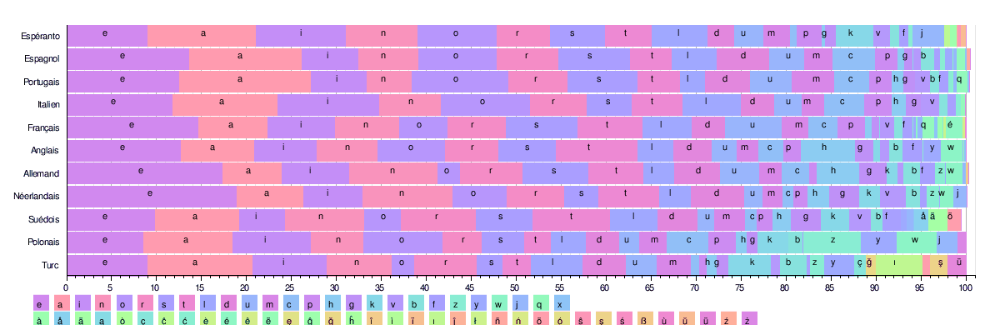

Codage Cours 1 · L3 S5
Codage physique et entropie
Pour transmettre une information, on la code : pour la compresser, pour la protéger des erreurs, et pour la faire voyager sur un support physique. Ce premier cours présente d'abord les codes en ligne, qui traduisent les bits en niveaux électriques (NRZ, Manchester, HDB3…), puis l'entropie de Shannon, qui mesure la quantité d'information d'une source et dit jusqu'où on peut la compresser sans perte.
Objectifs
- Situer le codage de source, le codage de canal et le codage physique dans le schéma de Shannon.
- Distinguer compression sans perte et avec perte ; calculer un débit et un taux de compression.
- Tracer le signal d'une suite de bits en unipolaire, NRZ, NRZI, Manchester, Miller, bipolaire et HDB3, et décoder un signal HDB3.
- Comparer ces codes : synchronisation, composante continue, largeur de bande.
- Calculer l'entropie d'une source et d'un couple de variables ; interpréter entropie relative et redondance.
Prérequis
- Numération binaire.
- Probabilités discrètes : loi d'une variable aléatoire, loi d'un couple, indépendance.
- Logarithme en base 2 : \(\log_2 x = \ln x / \ln 2\), et \(\log_2 2^k = k\).
Le module diapos 1–3
Le module « Codage de l'information » (175UD04) est assuré par Florent Carlier. Il suit le trajet d'une information, de sa compression à sa protection contre les erreurs, jusqu'aux contraintes de temps réel.
Plan du module diapo 2
- Codage physique, codage sans perte : introduction, entropie. C'est l'objet de ce cours.
- Code correcteur d'erreur, code d'étalement : codes en bloc (cours 3A), principe du CDMA (cours 3B).
- Code cyclique, code pseudo-aléatoire : codes pseudo-aléatoires, codes de Gold et JPL, codes cycliques.
- Temps réel : notion et principe, mise en évidence de l'ordonnancement des tâches.
Modalités de contrôle diapo 3
| Épreuve | Forme | Coefficient |
|---|---|---|
| Contrôle terminal | Examen individuel | 2 |
| Travaux d'aptitude pratique et professionnelle (TAPP) | Projet en binôme | 1 |
| Rattrapage | Examen individuel | 3 |
Mesurer et traiter l'information diapos 4–7
Avant de coder une information, il faut savoir la mesurer : combien de bits faut-il vraiment pour la transmettre ou la stocker ? Cette question a donné naissance à la théorie de l'information, et c'est elle qui rend possibles le fax, le MP3 ou la vidéo numérique.
Naissance de la théorie de l'information diapo 4
Les premiers travaux sur la mesure de l'information datent du début des années 1920. Nyquist l'aborde sous l'angle de la communication, Fisher d'un point de vue statistique. Mais ce n'est qu'à partir de 1948, grâce aux travaux de Claude Shannon, que la théorie de l'information (information theory) prend sa forme actuelle.
Exemple Ce que la compression a changé diapo 4
- Fax : la transmission d'une page passe de 4 min 20 s à 17 s grâce au codage par plages (run-length coding) et au codage de Huffman. Ajout Soit un gain d'un facteur \(260 / 17 \approx 15\).
- Vidéo : sans compression, un CD-ROM de 650 Mo contient 31 s de vidéo ; avec la norme MPEG-1, il en contient 74 min. Ajout Soit un facteur \(74 \times 60 / 31 \approx 143\).
Complément Le codage par plages
Une ligne de fax est surtout blanche. Le codage par plages (run-length encoding, RLE) remplace chaque suite de symboles identiques par sa longueur : la ligne BBBBBBBBNNNBBBB (B blanc, N noir) devient « 8 blancs, 3 noirs, 4 blancs ». Le codage de Huffman, vu au cours 2, attribue ensuite des mots courts aux longueurs les plus fréquentes.
Compresser sans perte ou avec perte diapos 5–6
Le traitement du contenu d'une source d'information peut se faire sous deux formes : sans perte d'information, ou avec perte d'information.
Définition Compression sans perte, avec perte
Ajout Une compression est sans perte (lossless) quand la décompression restitue exactement les données d'origine : c'est obligatoire pour un texte, un programme ou une archive. Elle est avec perte (lossy) quand on accepte de ne retrouver qu'une approximation, en supprimant ce que l'oreille ou l'œil ne perçoit pas : son, image, vidéo.
Exemple Le MP3, une compression avec perte diapo 6
Le MP3 est un fichier audio MPEG-1 Layer 3. On part d'un signal analogique stéréo, de bande de fréquence 0 à 20 kHz, échantillonné à 44,1 kHz et quantifié sur 16 bits. Son débit brut vaut :
\[ 44{,}1 \times 10^{3} \times 16 \times 2 = 1{,}411 \text{ Mbit/s} \]Le MP3 le réduit par exemple à 128 kbit/s : le taux de compression vaut 11, puisque \(1411{,}2 / 128 \approx 11\). Ce taux résulte de deux étapes : l'élimination de composantes spectrales, puis l'utilisation du codage de Huffman.
Complément D'où viennent ces nombres
- 44,1 kHz : d'après le théorème d'échantillonnage de Nyquist-Shannon, il faut échantillonner à plus du double de la fréquence la plus haute, ici \(2 \times 20 = 40\) kHz.
- 16 bits : chaque échantillon prend l'une de \(2^{16} = 65\,536\) valeurs.
- × 2 : deux voies, gauche et droite (stéréo).
- Des deux étapes du MP3, seule la première perd de l'information : elle supprime les fréquences que l'oreille n'entend pas, masquées par des sons plus forts. Le codage de Huffman qui suit est sans perte.
Exercice 1 Taille d'un morceau de musique
Un morceau dure 4 minutes. Calculer sa taille en qualité CD (44,1 kHz, 16 bits, stéréo), puis en MP3 à 128 kbit/s. Combien de morceaux de ce type tiennent sur une clé de 1 Go en MP3 ? On prend 1 Mo = \(10^6\) octets et 1 Go = \(10^9\) octets.
Indice
Taille en bits = débit × durée en secondes ; diviser par 8 pour obtenir des octets.
Solution proposée
Durée : \(4 \times 60 = 240\) s.
- Qualité CD : \(1\,411\,200 \times 240 = 338\,688\,000\) bits, soit \(42{,}3\) Mo.
- MP3 : \(128\,000 \times 240 = 30\,720\,000\) bits, soit \(3{,}84\) Mo. Le rapport vaut bien \(42{,}3 / 3{,}84 \approx 11\).
- Sur 1 Go : \(10^9 / (3{,}84 \times 10^6) \approx 260\) morceaux (contre 23 en qualité CD).
Le paradigme de Shannon diapo 7
Le schéma d'une communication peut être représenté comme suit.
Complément Le rôle de chaque étage
- Le codeur de source (source coder) compresse : il retire la redondance du message pour le représenter avec le moins de bits possible. L'entropie (section 5) mesure jusqu'où il peut aller ; le cours 2 présente les codes de Shannon-Fano, de Huffman et le codage arithmétique.
- Le codeur de canal (channel coder) fait l'inverse : il ajoute une redondance contrôlée, pour que le décodeur puisse détecter ou corriger les erreurs dues au bruit. Ce sont les codes correcteurs des cours 3 et 4.
- Le canal (channel) est le support physique : câble, fibre, air. Pour y envoyer les bits, il faut les traduire en signaux : c'est le codage physique des sections 3 et 4.
- Les décodeurs défont, dans l'ordre inverse, ce qu'ont fait les codeurs.
Transmission numérique : les codes à deux niveaux diapos 8–13
Une fois l'information codée en bits, il reste à la faire circuler sur un fil. Il faut choisir une façon de représenter chaque bit par un signal électrique, que le récepteur saura relire sans se tromper, même après une longue suite de bits identiques.
Définition Transmission numérique diapo 8
La transmission numérique (digital transmission) consiste à faire transiter les informations sur le support physique de communication sous forme de signaux numériques. Les données analogiques doivent donc être numérisées au préalable.
On distingue deux familles de codage des signaux :
- le codage à deux niveaux : chaque instant est à \(-X\) ou à \(+X\) (unipolaire, NRZ, NRZI, Manchester, Miller) ;
- le codage à trois niveaux : \(-X\), 0 ou \(+X\) (bipolaire, HDBn, section suivante).
Complément Vocabulaire et critères de choix d'un code
Ces codes s'appellent des codes en ligne (line codes). Chaque bit occupe un intervalle de durée \(T\), l'intervalle significatif. Le débit binaire vaut \(D = 1/T\) bit/s. La rapidité de modulation \(R\), en bauds, compte le nombre d'intervalles élémentaires du signal par seconde : \(R = D\) quand chaque bit est un seul palier, \(R = 2D\) quand chaque bit est coupé en deux (Manchester).
Un bon code en ligne doit :
- permettre la synchronisation : le récepteur retrouve les limites des bits grâce aux transitions du signal ; sans transition, son horloge dérive ;
- éviter la composante continue : un signal qui reste longtemps du même côté a une valeur moyenne non nulle, qui passe mal les transformateurs et les liaisons capacitives ;
- occuper une bande de fréquences étroite : plus le signal change souvent, plus il demande de bande ;
- distinguer une suite de 0 de l'absence de signal (ligne coupée), et si possible détecter des erreurs.
Unipolaire diapo 9
Dans le codage unipolaire (unipolar), le bit 1 est représenté par une tension positive, et le bit 0 par une tension nulle.
Avantage
- Réduction encore plus significative du spectre. À vérifier
Inconvénient
- Impossible de distinguer une suite de 0 de l'absence d'information.
La diapo ne dit pas par rapport à quoi le spectre est réduit : « encore plus » suppose une comparaison avec un code présenté avant, qui ne figure pas dans le support. Des créneaux de même durée occupent en fait la même bande qu'en NRZ ; le codage unipolaire y ajoute une forte composante continue, puisque le signal ne descend jamais sous 0.
NRZ diapo 10
Le code NRZ (Non Return to Zero) associe \(-X\) au bit 0 et \(+X\) au bit 1. Le signal ne revient jamais à zéro entre deux bits, d'où son nom.
Avantage
- Le récepteur peut déterminer la présence ou non d'un signal : une ligne à 0 V signifie qu'il n'y a rien.
Inconvénient
- Difficulté de synchronisation.
Complément Pourquoi la synchronisation est difficile
Sur une suite de bits identiques, le signal NRZ reste constant. Le récepteur ne voit aucune transition et doit compter les bits avec sa seule horloge : après les quatre 0 de la figure, il s'en sort ; après deux cents, une petite dérive d'horloge suffit à lui faire compter 199 ou 201 bits. Tous les codes suivants cherchent à garantir des transitions.
NRZI diapo 11
Le code NRZI (Non Return to Zero Inverted) ne code plus le bit par un niveau, mais par la présence ou l'absence d'un changement :
- quand le bit est à 1, le signal change d'état ;
- quand le bit est à 0, il n'y a aucun changement d'état.
La diapo associe ce code à l'horloge. Ajout Comme en NRZ, le récepteur doit disposer d'une horloge pour découper le signal en intervalles : une suite de 0 ne produit aucune transition.
Complément Ce que change le NRZI
- L'information est dans les transitions, pas dans les niveaux : si les deux fils sont inversés, le décodage reste juste.
- Une suite de 1 produit une transition par bit, et la synchronisation est facile. Une suite de 0 laisse le signal constant : le problème du NRZ demeure pour les 0. En pratique, on garantit des transitions en amont du codage. Hors programme Le code 4B/5B de FDDI n'emploie que des mots de 5 bits sans longue suite de 0 ; l'USB, qui suit la convention inverse (un 0 = une transition), insère un 0 après six 1 consécutifs.
Manchester diapo 12
Le code Manchester (Manchester code), ou codage biphase, introduit une transition au milieu de l'intervalle significatif :
- bit de donnée à 0 : transition du niveau bas vers le niveau haut (front montant) ;
- bit de donnée à 1 : transition du niveau haut vers le niveau bas (front descendant).
Entre deux bits égaux, le signal doit aussi changer de niveau à la frontière, pour se retrouver du bon côté avant la transition du milieu.
Complément Avantages et coût du Manchester
Avantages
- Au moins une transition par bit : le récepteur recale son horloge en permanence (code autosynchronisant).
- Pas de composante continue : chaque bit passe la moitié du temps à chaque niveau.
- L'absence de transition au milieu d'un bit trahit une erreur ou une ligne coupée.
Coût
- La rapidité de modulation double : \(R = 2D\). Un débit de 10 Mbit/s demande 20 Mbauds, et une bande de fréquences deux fois plus large qu'en NRZ.
Attention Deux conventions opposées
Ajout Le cours suit la convention d'origine (G. E. Thomas) : 0 = front montant, 1 = front descendant. La norme Ethernet IEEE 802.3 fait le contraire. Les deux se rencontrent dans les livres ; en examen, on applique celle du cours, et on l'énonce.
Miller diapo 13
Le code de Miller (delay mode, delay modulation) part d'un signal intermédiaire identique au codage Manchester, puis supprime une transition sur deux. On obtient les règles suivantes :
- une transition (front montant ou descendant) au milieu de chaque bit 1 ;
- pas de transition au milieu d'un bit 0 ;
- une transition en fin de bit 0 si celui-ci est suivi d'un autre 0.
Complément Quelle transition sur deux ?
Un signal à deux niveaux alterne forcément fronts montants et fronts descendants. Avec la convention du cours, les fronts descendants du Manchester tombent au milieu de chaque 1 et à la frontière entre deux 0 : ce sont exactement les transitions du code de Miller. Le codeur de Miller garde donc les fronts descendants du Manchester (une transition sur deux) et change de niveau à chacun, dans un sens ou dans l'autre. On l'a vérifié par programme sur 2 000 suites aléatoires.
Conséquences : le signal change au plus une fois par bit, ce qui divise par deux la bande occupée par rapport au Manchester ; il reste au plus deux intervalles sans transition (cas de la suite 1 0 1), ce qui suffit à garder la synchronisation.
Exercice 2 Coder une suite à deux niveaux
Coder la suite 1 0 1 1 0 0 0 1 en NRZ, NRZI, Manchester et Miller. Avant le premier bit, la ligne est au niveau bas \(-X\).
Indice
Travailler bit par bit, en demi-bits. En NRZI et en Miller, noter le niveau courant et ne le faire basculer qu'aux instants prévus par la règle.
Les codes à trois niveaux : bipolaire et HDBn diapos 14–16
En s'autorisant un troisième niveau, 0, on peut supprimer la composante continue sans doubler la bande comme le Manchester. Reste à régler le cas des longues suites de 0, qui laissent la ligne muette.
Bipolaire diapo 14
Définition Code bipolaire
Le code bipolaire (bipolar, Alternate Mark Inversion, AMI) émet la valeur 0 lorsque le bit est à 0, et alternativement \(+X\) et \(-X\) lorsque le bit est à 1.
Complément Forces et faiblesse du bipolaire
- Les impulsions alternent : la moyenne du signal est nulle, il n'y a pas de composante continue.
- Deux impulsions successives de même signe sont impossibles : si le récepteur en voit, c'est une erreur de transmission. Le code détecte donc certaines erreurs.
- Mais une longue suite de 0 laisse la ligne à 0 V, sans transition : on perd la synchronisation, comme en NRZ. Les codes HDBn corrigent ce défaut.
HDBn diapo 15
Le code HDBn (High Density Bipolar of order n, bipolaire à haute densité) est dérivé du code bipolaire pour éviter les pertes de synchronisation.
Algorithme Principe du HDBn diapo 15
On interdit plus de \(n\) symboles 0 consécutifs. Le \((n+1)\)-ième « 0 » est transformé en \(+1\) ou \(-1\).
Complément Violations et bourrage
Pour que le récepteur reconnaisse l'impulsion ajoutée comme un 0, on lui donne la même polarité que l'impulsion précédente. Elle viole ainsi l'alternance du bipolaire : c'est une violation, notée V. Aucun vrai 1 ne peut produire une telle impulsion.
Pour ne pas recréer de composante continue, deux violations successives doivent être de polarités opposées. Quand la règle de violation l'empêche, on remplace aussi le premier 0 de la suite par une impulsion de bourrage, notée B, qui respecte l'alternance. Une suite de \(n+1\) zéros devient donc :
- \(0 \dots 0\,V\) : \(n\) zéros puis la violation ;
- \(B\,0 \dots 0\,V\) : le bourrage, \(n-1\) zéros, puis la violation.
HDB3 diapo 16
Le cas le plus courant est \(n = 3\) : la ligne ne reste jamais plus de trois temps à 0. Chaque suite de quatre zéros est remplacée selon l'arbre de décision de la diapo 16.
Méthode Coder une suite de quatre zéros en HDB3
- Regarder la polarité de la dernière violation : la nouvelle violation V sera de polarité opposée.
- Regarder la polarité du dernier « 1 » émis, c'est-à-dire de la dernière impulsion non nulle (B et V compris).
- Si le dernier « 1 » a déjà la polarité voulue pour V, on émet \(0\,0\,0\,V\). Sinon, on émet \(B\,0\,0\,V\), où B prend la polarité voulue pour V.
Ajout Au tout début de la transmission, il n'y a pas encore de violation : il faut fixer une convention. Dans cette page, le premier 1 est codé \(+X\), et la dernière violation est supposée négative.
Complément Règle équivalente : la parité
On compte les impulsions émises depuis la dernière violation. Si leur nombre est impair, on émet \(0\,0\,0\,V\) ; s'il est pair (zéro compris), on émet \(B\,0\,0\,V\).
Pourquoi : après une violation de polarité \(p\), les impulsions alternent \(-p, +p, -p, \dots\) Après un nombre impair d'impulsions, la dernière vaut \(-p\) : une violation de même polarité, \(-p\), alterne bien avec la précédente. Après un nombre pair, la dernière vaut \(p\) : il faut d'abord un B de polarité \(-p\). Les deux règles ont été comparées par programme : elles donnent le même codage.
Complément Décoder un signal HDBn
Le récepteur lit les impulsions dans l'ordre. Une impulsion de même polarité que la précédente est une violation : elle et les \(n\) symboles qui la précèdent valent 0, ce qui efface aussi un éventuel B. Toutes les autres impulsions sont des 1, et les niveaux nuls des 0.
Le TP 1B fait programmer en C un codeur et un décodeur HDBn, pour HDB2, HDB3 et HDB4 (énoncé). L'algorithme ci-dessous en donne le cœur.
fonction CoderHDBn(bits, n)
dernière ← −1 // dernière impulsion émise (le 1er 1 sera +1)
compte ← 0 // impulsions depuis la dernière violation
i ← 0
tant que i < longueur(bits) faire
si bits[i .. i+n] = 0…0 alors // n+1 zéros
si compte est impair alors
v ← dernière // 0…0V
émettre n fois 0, puis v
sinon
v ← −dernière // B0…0V
émettre v, n−1 fois 0, puis v
fin si
dernière ← v ; compte ← 0 ; i ← i + n + 1
sinon si bits[i] = 1 alors
dernière ← −dernière ; émettre dernière
compte ← compte + 1 ; i ← i + 1
sinon
émettre 0 ; i ← i + 1
fin si
fin tant queComparaison des codes
Complément Tableau récapitulatif
Ce tableau rassemble les propriétés vues plus haut. Hors programme La dernière colonne, « Exemple d'usage », sort du cours.
| Code | Niveaux | Transitions garanties | Composante continue | Bande occupée | Exemple d'usage |
|---|---|---|---|---|---|
| Unipolaire | 0, +X | non | forte | comme le NRZ | liaisons simples, logique TTL |
| NRZ | −X, +X | non | si 0 et 1 déséquilibrés | référence | RS-232 |
| NRZI | −X, +X | sur les 1 | possible | comme le NRZ | USB, FDDI |
| Manchester | −X, +X | à chaque bit | nulle | double (\(R = 2D\)) | Ethernet 10 Mbit/s |
| Miller | −X, +X | au moins une tous les 2 bits | faible | moitié du Manchester | enregistrement magnétique |
| Bipolaire | −X, 0, +X | sur les 1 | nulle | comme le NRZ | lignes T1 (Amérique du Nord) |
| HDB3 | −X, 0, +X | au moins une tous les 4 bits | nulle | comme le NRZ | lignes E1 à 2,048 Mbit/s (Europe) |
Exercice 3 Bipolaire et HDB3
Coder la suite 1 0 0 0 0 1 0 0 0 0 1 1 0 0 0 0 0 0 0 0 1 en bipolaire, puis en HDB3. Le premier 1 est codé \(+X\) ; avant la suite, la dernière violation est supposée négative. Pour chaque suite de quatre zéros, repérer B et V.
Indice
Il y a quatre suites de quatre zéros, et chacune tombe dans une feuille différente de l'arbre de décision. Après chaque violation, mettre à jour « dernière violation » et « dernier 1 ».
Exercice 4 Décoder un signal HDB3
Un récepteur HDB3 reçoit la suite de niveaux suivante. Retrouver les bits émis.
+ − + 0 0 + − 0 0 − 0 + 0 0 0 + − 0 0Indice
Chercher les impulsions de même signe que l'impulsion non nulle qui les précède.
Solution proposée
Les violations sont en positions 6 (+ après le + de la position 3), 10 (− après le − de la position 7) et 16 (+ après le + de la position 12). Chacune, avec les trois symboles qui la précèdent, vaut 0000 : les positions 3 à 6, 7 à 10 et 13 à 16 sont des 0. Les positions 3 et 7 étaient donc des bourrages B. Les autres impulsions (1, 2, 12, 17) sont des 1.
Bits émis : 1 1 0 0 0 0 0 0 0 0 0 1 0 0 0 0 1 0 0. On vérifie que le recodage de cette suite redonne exactement le signal reçu.
L'entropie d'une source diapos 17–21
Comment caractériser le niveau d'ordre ou de désordre dans un message ? Lors de la transmission d'un message, faut-il tout envoyer, ou peut-on espérer le compresser ? L'entropie répond aux deux questions à la fois.
Incertitude d'un événement diapo 17
Un événement très probable n'apprend presque rien quand il se produit ; un événement rare apprend beaucoup. La diapo 17 pose la question de cette mesure ; la diapo 20 l'utilise sous le nom d'« incertitude » sans en donner la formule.
Complément Incertitude, ou information propre
L'incertitude d'un événement \(x\) de probabilité \(p(x)\), aussi appelée information propre (self-information), vaut :
\[ I(x) = -\log_2 p(x) = \log_2 \frac{1}{p(x)} \quad \text{bits} \]- Un événement certain (\(p = 1\)) n'apporte aucune information : \(I = 0\).
- Pile ou face équilibré : \(I = \log_2 2 = 1\) bit. Une face d'un dé : \(\log_2 6 \approx 2{,}58\) bits.
- Pour deux événements indépendants, les probabilités se multiplient et les incertitudes s'additionnent.
Dans tout le chapitre, log désigne le logarithme en base 2 : la diapo n'écrit pas la base, mais ses valeurs numériques (0,918 ; 4,75) sont calculées en base 2. L'unité est alors le bit.
Combien de bits pour un message binaire ? diapo 18
La diapo 18 retrouve la formule de l'entropie par un raisonnement de dénombrement.
- Le message est formé de 0 et de 1, de longueur \(N\). Transmis tel quel, il comporte \(N\) bits.
- Transmission astucieuse : on compte la quantité de 1 et celle de 0, et on transmet chacune de ces quantités. Il faut au plus \(2 \log N\) bits.
- Les messages possibles : avec \(N_0\) la quantité de 0 et \(N_1\) la quantité de 1, il y a différents messages possibles, mais ils sont en nombre limité. Il y en a exactement \[ A = \frac{(N_0 + N_1)!}{N_0!\, N_1!} \]
- Le rang : parmi tous ces messages, il suffit de donner le rang du message à transmettre, ce qui demande \(\log A\) bits.
Propriété Formule de l'entropie diapo 18
En effectuant les calculs, on trouve :
\[ \text{Entropie} = -N \left( \frac{N_0}{N} \log \frac{N_0}{N} + \frac{N_1}{N} \log \frac{N_1}{N} \right) \]Ajout Plus précisément, \(\log A\) est proche de cette quantité quand \(N\) est grand (voir la preuve) : c'est le nombre de bits que coûte tout le message.
Cette définition a été introduite par Shannon en 1948. En introduisant les fréquences \(p_0 = N_0 / N\) et \(p_1 = N_1 / N\), la formule devient, par symbole :
Preuve proposée
La formule de Stirling donne \(\log_2 n! \approx n \log_2 n - n \log_2 e\) pour \(n\) grand. Comme \(N = N_0 + N_1\), les termes en \(\log_2 e\) se compensent :
\[ \log_2 A = \log_2 N! - \log_2 N_0! - \log_2 N_1! \approx N \log_2 N - N_0 \log_2 N_0 - N_1 \log_2 N_1 \]En écrivant \(N \log_2 N = N_0 \log_2 N + N_1 \log_2 N\), on regroupe :
\[ \log_2 A \approx -N_0 \log_2 \frac{N_0}{N} - N_1 \log_2 \frac{N_1}{N} = -N \left( p_0 \log_2 p_0 + p_1 \log_2 p_1 \right) \]Exemple Un message de 1 000 bits
Ajout Un message de \(N = 1000\) bits contient \(N_1 = 333\) uns. Transmis tel quel, il coûte 1 000 bits. Le rang parmi les \(A\) messages possibles coûte \(\log_2 A \approx 913\) bits, plus \(2 \log_2 1000 \approx 20\) bits pour les deux compteurs. La formule donne \(N \times 0{,}918 \approx 918\) bits : l'approximation est déjà bonne, et le gain d'environ 8 % annoncé à la diapo 19 apparaît.
Analyse de la formule diapo 19
La diapo 19 examine quelques valeurs de l'entropie \(E\) d'un message binaire.
| \(p_0\) | \(p_1\) | \(E\) | Commentaires |
|---|---|---|---|
| 1/2 | 1/2 | 1 | Autant de 0 que de 1. Il faut transmettre tout le message : on n'a aucun avantage à faire autrement, le message ne peut pas être condensé. Le message est dit contingent. |
| 1/3 | 2/3 | 0,918… | On gagne 8 %. |
| 1 | 0 | 0 | Le message ne comporte que des 0 : il suffit de le dire, sans transmettre la suite des zéros. |
| — | — | 1 ? | Très rare : il est improbable de ne trouver aucune régularité nulle part (une certaine suite de 0, un motif particulier). Un certain niveau de codage est possible ; l'entropie est peut-être voisine de 1, mais légèrement inférieure à 1. |
Complément Lire le tableau
- Pour \(p_0 = 1\), le terme \(p_1 \log p_1\) s'écrit \(0 \log 0\) : on convient qu'il vaut 0, puisque \(p \log p \to 0\) quand \(p \to 0\).
- La dernière ligne rappelle que la formule ne regarde que les fréquences des symboles. Un message avec autant de 0 que de 1 peut quand même contenir des motifs répétés (
0101…) qu'un codeur exploiterait. Pour les voir, il faut tenir compte des symboles précédents : c'est l'objet de l'expérience de Shannon (section 6).
Entropie d'une variable aléatoire discrète diapo 20
Définition Entropie diapo 20
Soit \(X\) une variable aléatoire à valeurs dans \(\{x_1, x_2, \dots, x_n\}\) (avec éventuellement \(n = +\infty\)), telle que \(p_i = P\{X = x_i\}\) pour tout \(i \in [1, n]\). L'entropie de \(X\) (entropy), notée \(H(X)\), est la moyenne des incertitudes calculée sur les événements \(\{X = x_i\}\) :
Complément Bornes de l'entropie
Pour une variable à \(n\) valeurs possibles :
\[ 0 \le H(X) \le \log_2 n \]- \(H(X) = 0\) quand une valeur est certaine ;
- \(H(X) = \log_2 n\) quand les \(n\) valeurs sont équiprobables : c'est le désordre maximal.
L'entropie s'exprime en bits par symbole. Le théorème du codage de source de Shannon, vu au cours 2, lui donne son sens pratique : aucun code sans perte ne peut utiliser en moyenne moins de \(H(X)\) bits par symbole, et on peut s'en approcher autant qu'on veut.
Preuve proposée de la borne supérieure
On utilise \(\ln t \le t - 1\), avec égalité seulement pour \(t = 1\). En l'appliquant à \(t = 1/(n p_i)\) :
\[ H(X) - \log_2 n = \sum_i p_i \log_2 \frac{1}{n\, p_i} \le \frac{1}{\ln 2} \sum_i p_i \left( \frac{1}{n\, p_i} - 1 \right) = \frac{1}{\ln 2} \left( \sum_i \frac{1}{n} - 1 \right) \le 0 \]L'égalité impose \(n\, p_i = 1\) pour tout \(i\) : la loi est uniforme.
Entropie d'un couple de variables diapo 21
Définition Entropie d'un couple diapo 21
Soient \(X\) et \(Y\) deux variables aléatoires discrètes, à valeurs respectivement dans \(\{x_1, \dots, x_n\}\) et \(\{y_1, \dots, y_m\}\). Si l'on désigne par \(p_{ij} = P\{X = x_i \cap Y = y_j\}\) la loi du couple \((X, Y)\), on prolonge sans difficulté la définition de l'entropie d'une variable à celle d'un couple :
Complément Entropie conditionnelle et information mutuelle
La diapo s'intitule « entropie et information liées à un couple de variables », et la diapo 28 parle d'entropie conditionnelle. Deux quantités en découlent :
- l'entropie conditionnelle (conditional entropy) \(H(Y \mid X) = H(X, Y) - H(X)\) : l'incertitude qui reste sur \(Y\) quand on connaît \(X\) ;
- l'information mutuelle (mutual information) \(I(X ; Y) = H(X) + H(Y) - H(X, Y)\) : ce que la connaissance de l'une apprend sur l'autre.
On a toujours \(H(X, Y) \le H(X) + H(Y)\), avec égalité si et seulement si \(X\) et \(Y\) sont indépendantes (alors \(I(X ; Y) = 0\)). Connaître \(X\) ne peut que réduire l'incertitude sur \(Y\) : \(H(Y \mid X) \le H(Y)\).
Exercice 5 Entropie d'une source à quatre symboles
Une source émet les symboles A, B, C, D avec les probabilités \(1/2\), \(1/4\), \(1/8\) et \(1/8\).
- Calculer son entropie.
- Combien de bits par symbole faut-il avec un code de longueur fixe ?
- Calculer la longueur moyenne du code A = 0, B = 10, C = 110, D = 111. Conclure.
Indice
\(-\log_2 (1/2^k) = k\) : chaque terme \(p_i \log_2 (1/p_i)\) se calcule de tête.
Solution proposée
- \(H = \frac12 \times 1 + \frac14 \times 2 + \frac18 \times 3 + \frac18 \times 3 = 1{,}75\) bit par symbole.
- Quatre symboles demandent \(\log_2 4 = 2\) bits avec un code de longueur fixe (00, 01, 10, 11).
- Longueur moyenne : \(\frac12 \times 1 + \frac14 \times 2 + \frac18 \times 3 + \frac18 \times 3 = 1{,}75\) bit. Le code atteint l'entropie : c'est le mieux possible, et on gagne 12,5 % sur le code fixe. Ce code est celui que construit l'algorithme de Huffman (cours 2).
Exercice 6 Entropie d'un couple
Deux variables binaires \(X\) et \(Y\) ont la loi jointe suivante : \(P(0,0) = 1/2\), \(P(0,1) = 1/4\), \(P(1,0) = 0\), \(P(1,1) = 1/4\), où \(P(x, y) = P\{X = x \cap Y = y\}\). Calculer \(H(X)\), \(H(Y)\), \(H(X, Y)\), \(H(Y \mid X)\) et \(I(X ; Y)\). Les variables sont-elles indépendantes ?
Indice
Commencer par les lois marginales : \(P\{X = 0\} = P(0,0) + P(0,1)\), etc.
Solution proposée
- Marginales : \(P\{X = 0\} = 3/4\), \(P\{X = 1\} = 1/4\) ; \(P\{Y = 0\} = P\{Y = 1\} = 1/2\).
- \(H(X) = -\frac34 \log_2 \frac34 - \frac14 \log_2 \frac14 \approx 0{,}811\) bit ; \(H(Y) = 1\) bit.
- \(H(X, Y) = -\frac12 \log_2 \frac12 - 2 \times \frac14 \log_2 \frac14 = 0{,}5 + 1 = 1{,}5\) bit (le terme nul ne compte pas).
- \(H(Y \mid X) = 1{,}5 - 0{,}811 \approx 0{,}689\) bit ; \(I(X ; Y) = 0{,}811 + 1 - 1{,}5 \approx 0{,}311\) bit.
\(I(X ; Y) \ne 0\) : les variables ne sont pas indépendantes. On le voit aussi directement : \(P(1,0) = 0\) alors que \(P\{X = 1\} \times P\{Y = 0\} = 1/8\).
L'expérience de Shannon : l'entropie de l'anglais diapos 22–29
Shannon a appliqué l'entropie à la langue écrite. Si l'on tient compte de plus en plus de la structure de l'anglais, combien d'information porte réellement une lettre ? La réponse mesure la redondance de la langue, et donc ce qu'un codeur peut gagner sur un texte.
Le point de départ : lettres équiprobables diapos 22–24
L'alphabet compte 26 lettres plus l'espace, soit 27 symboles. S'ils étaient équiprobables et indépendants, chaque lettre porterait :
Un texte tiré au hasard sous cette hypothèse ressemble à ceci (approximation d'ordre 0) :
XFOML RHKHJFFJUJ ZLPWCFWCKCYJFFJEYVKCQSGHYD QP AAMKBZAACIBZLHJQD
Mais les lettres de l'anglais ne sont pas équiprobables. La diapo 23 donne leurs fréquences relatives (le tiret désigne l'espace).
| Lettre | Fréquence | Lettre | Fréquence | Lettre | Fréquence |
|---|---|---|---|---|---|
| espace | 0,182 | H | 0,043 | P | 0,016 |
| E | 0,107 | D | 0,031 | W | 0,013 |
| T | 0,086 | F | 0,028 | B | 0,012 |
| A | 0,067 | L | 0,024 | V | 0,007 |
| O | 0,065 | C | 0,023 | K | 0,003 |
| N | 0,058 | M | 0,021 | X | 0,001 |
| R | 0,056 | U | 0,020 | J | 0,001 |
| I | 0,052 | G | 0,016 | Q | 0,001 |
| S | 0,050 | Y | 0,016 | Z | 0,001 |
Approximations successives diapos 25–27
Shannon produit des textes de plus en plus proches de l'anglais en tenant compte, à chaque étape, d'une lettre précédente de plus. L'entropie par lettre baisse à chaque étape.
Ordre 1 : lettres indépendantes, tirées selon les fréquences du tableau. \(H_1 = 4{,}029\) bits.
OCRO HLI RGWR NMIEL VIS EU LL NBNESEBYA TH EEI ALHENHTTPA OOBTTVA NAH BRL
Ordre 2 : chaque lettre dépend de la précédente (fréquences des paires de lettres). \(H_2 = 3{,}318\) bits.
ON IE ANTSOUTINYS ARE T INCORE ST BE S DEAMY ACHIN D ILONASIVE TUCOOWE AT TEASONARE FUSO TIZIN ANDY TOBE SEACE CTISBE
Ordre 3 : chaque lettre dépend des deux précédentes. \(H_3 = 3{,}1\) bits.
IS NO IST LAT WHEY CRATICT FROURE BIRS GROCID PONDENOME OF DEMONSTRURES OF THE REPTAGIN IS REGOACTIONA OF CRE
En poursuivant jusqu'à l'ordre 8, on descend à \(H_8 = 1{,}86\) bit.
| Ordre | Modèle | Entropie par lettre |
|---|---|---|
| \(H_0\) | 27 symboles équiprobables | 4,75 bits |
| \(H_1\) | fréquences des lettres | 4,029 bits |
| \(H_2\) | une lettre connaissant la précédente | 3,318 bits |
| \(H_3\) | une lettre connaissant les deux précédentes | 3,1 bits |
| \(H_8\) | une lettre connaissant les sept précédentes | 1,86 bit |
Complément Ce que mesure \(H_n\)
- \(H_n\) est une entropie conditionnelle : l'incertitude sur une lettre quand on connaît les \(n - 1\) lettres qui la précèdent. Chaque lettre connue en plus réduit l'incertitude sur la suivante, d'où la baisse : après « TH », un E est très probable.
- Recalculée à partir des fréquences arrondies du tableau, \(H_1\) vaut environ 4,06 bits. La valeur 4,029 (ou 4,03) est celle publiée par Shannon, obtenue avec des fréquences plus précises.
- Hors programme Pour les ordres élevés, Shannon a estimé l'entropie en faisant deviner à des lecteurs la lettre suivante d'un texte (1951).
Entropie relative et redondance diapo 28
La diapo 28 compare l'entropie conditionnelle \(H_8 = 1{,}86\) bit au maximum \(H_0\).
Définition Entropie relative, redondance diapo 28
L'entropie relative est le rapport entre l'entropie de la source et l'entropie maximale ; la redondance (redundancy) est son complément à 1 :
\[ E_r = \frac{H_8}{H_0} = \frac{1{,}86}{4{,}75} = 40\ \% \qquad R = 1 - E_r = 60\ \% \]L'anglais écrit laisse donc 40 % de libre, et 60 % d'imposé.
Complément Interpréter la redondance
- Le calcul exact donne \(1{,}86 / 4{,}75 \approx 39\ \%\), que la diapo arrondit à 40 %.
- « 60 % d'imposé » : l'orthographe, la grammaire et le vocabulaire déterminent l'essentiel de chaque lettre. C'est pourquoi un texte dont on a effacé des lettres reste lisible, et pourquoi un bon codeur de source réduit fortement la taille d'un texte.
- Cette redondance naturelle protège aussi contre le bruit : un mot mal transmis se devine. Le codeur de canal fait la même chose, mais de façon contrôlée.
- Hors programme Ailleurs, « entropie relative » désigne une autre notion, la divergence de Kullback-Leibler entre deux lois. Dans ce cours, c'est le rapport \(H / H_{\max}\).
D'une langue à l'autre diapo 29
La diapo 29, « Dictionnaire / Multi-langue », compare la fréquence des lettres dans onze langues.

Complément Ce qu'on en tire
- Toutes les langues ont un profil très inégal : quelques lettres (e, a, i, n, o…) font l'essentiel des textes. Leur entropie d'ordre 1 est donc bien inférieure au maximum \(\log_2\) (nombre de lettres).
- Mais le profil change d'une langue à l'autre : le e représente environ 17 % des lettres en allemand et 19 % en néerlandais, mais moins de 10 % en polonais et en turc, où le a le dépasse. Un code ou un dictionnaire construit sur les fréquences d'une langue est moins efficace sur une autre.
- À l'inverse, le profil suffit souvent à reconnaître la langue d'un texte.
À retenir
L'essentiel
- Paradigme de Shannon : le codeur de source retire la redondance (compression), le codeur de canal ajoute une redondance contrôlée (protection contre le bruit), le canal transporte des signaux physiques.
- Une compression sans perte restitue exactement les données ; une compression avec perte, comme le MP3 (1,411 Mbit/s ramenés à 128 kbit/s, taux 11), supprime ce qu'on ne perçoit pas.
- Codes à deux niveaux : NRZ (un niveau par bit, synchronisation difficile), NRZI (un 1 = une transition), Manchester (transition au milieu de chaque bit : 0 montant, 1 descendant ; autosynchronisant mais bande doublée), Miller (le Manchester avec une transition sur deux).
- Code bipolaire : 0 → 0 V, 1 → alternativement \(+X\) et \(-X\) ; pas de composante continue, mais les longues suites de 0 font perdre la synchronisation.
- HDB3 : jamais plus de trois 0 consécutifs. « 0000 » devient \(0\,0\,0\,V\) ou \(B\,0\,0\,V\) ; V a la polarité de l'impulsion précédente, et les violations successives alternent.
- Décodage HDB3 : une impulsion de même signe que la précédente est une violation ; elle et les trois symboles d'avant valent 0.
- Entropie : \(H(X) = -\sum p_i \log_2 p_i\) bits par symbole, moyenne des incertitudes \(-\log_2 p_i\) ; \(0 \le H(X) \le \log_2 n\).
- Source binaire : \(H = 1\) pour \(p_0 = 1/2\) (message contingent, incompressible), \(0{,}918\) pour \(p_0 = 1/3\) (gain de 8 %), 0 si le message est certain.
- Couple : \(H(X, Y) = -\sum_i \sum_j p_{ij} \log p_{ij}\), égale à \(H(X) + H(Y)\) seulement si \(X\) et \(Y\) sont indépendantes.
- Anglais : \(H_0 = 4{,}75\), \(H_1 \approx 4{,}03\), \(H_8 \approx 1{,}86\) bit par lettre ; entropie relative ≈ 40 %, redondance ≈ 60 %.
Auto-évaluation
Pourquoi le codage unipolaire ne permet-il pas de détecter une ligne coupée ?
Parce qu'un 0 y est codé par une tension nulle : une suite de 0 et une ligne sans signal donnent le même 0 V. En NRZ, le 0 vaut \(-X\), et 0 V signifie « pas de signal ».
En NRZI, la suite 11111111 produit-elle des transitions ? Et la suite 00000000 ?
La première produit une transition à chaque bit (un 1 = un changement d'état). La seconde n'en produit aucune : le signal reste constant, et la synchronisation est aussi difficile qu'en NRZ.
Un lien Manchester transporte 10 Mbit/s. Quelle est sa rapidité de modulation ?
20 Mbauds : chaque bit est coupé en deux demi-intervalles. C'est le prix de la transition garantie au milieu de chaque bit.
En HDB3, comment le récepteur distingue-t-il une violation V d'un vrai 1 ?
Un vrai 1 alterne toujours avec l'impulsion précédente. V a la même polarité que l'impulsion précédente : le récepteur la reconnaît, et remplace V et les trois symboles d'avant par 0000.
Pourquoi a-t-on besoin de l'impulsion de bourrage B en HDB3 ?
Les violations successives doivent alterner, pour éviter la composante continue. Quand la dernière impulsion a déjà la polarité de la violation précédente, une violation de polarité opposée est impossible directement : B inverse d'abord la polarité, puis V la répète.
Quelle est l'entropie d'une source qui émet toujours le même symbole ? D'une source de 8 symboles équiprobables ?
0 bit : il n'y a aucune incertitude. \(\log_2 8 = 3\) bits : c'est le maximum pour 8 symboles.
Que signifie qu'un message binaire est « contingent » ?
Il contient autant de 0 que de 1 (\(p_0 = p_1 = 1/2\)) : son entropie vaut 1 bit par symbole, et on ne peut pas le condenser, du moins en ne regardant que les fréquences.
Pourquoi \(H_8\) est-il bien plus petit que \(H_1\) pour l'anglais ?
\(H_8\) mesure l'incertitude sur une lettre quand on connaît les sept précédentes. La structure de la langue rend alors la lettre suivante très prévisible, alors que \(H_1\) ne tient compte que de la fréquence des lettres isolées.
Références
Le cours s'appuie sur les travaux de Shannon :
- C. E. Shannon, « A Mathematical Theory of Communication », Bell System Technical Journal, 1948 : définition de l'entropie, paradigme de la communication, approximations successives de l'anglais.
- C. E. Shannon, « Prediction and Entropy of Printed English », Bell System Technical Journal, 1951 : valeurs \(H_0\) à \(H_8\) de l'anglais.